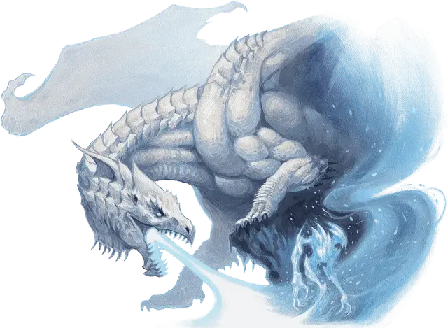

Оживлённое дыхание
Animated Breath
Большой Элементаль, нейтрально-злой

Класс Доспеха 15 (природный доспех, 17 в форме холода)
Хиты 95 (10к10 + 40)
Скорость 30 футов, летая 30 футов (парит)
| мод | спас | ||
|---|---|---|---|
| СИЛ | 19 | +4 | +4 |
| ЛОВ | 11 | +0 | +0 |
| ТЕЛ | 18 | +4 | +4 |
| мод | спас | ||
|---|---|---|---|
| ИНТ | 6 | −2 | −2 |
| МДР | 10 | +0 | +0 |
| ХАР | 5 | −3 | −3 |
Иммунитет к состояниям бессознательность, истощение, окаменение, опутанность, отравление, паралич
Чувства тёмное зрение 60 футов, пассивное Восприятие 10
Языки Драконий
Опасность 6 (2300 опыта)
Бонус мастерства +3
Особенности
Сопротивление урону. типа, соответствующего форме оживлённого дыхания (кислота, холод, огонь, электричество или яд).
Язык. Понимает Драконий, но не может говорить.
Цвет создателя. При создании, оживлённое дыхание принимает одну из пяти форм, соответствующих дыханию его создателя: Кислота, Холод, Огонь, Электричество или Яд. Эта форма определяет его КД, сопротивление урону, особенности и атаки.
Огненная аура (только Огненная форма). В начале каждого хода оживлённого дыхания каждое существо в радиусе 5 фт. от него получает 3 (1к6) урона огнём, и поджигает все горючие предметы, никем не несомые и не носимые. Существо, которое касается оживлённого дыхания или попадает по нему рукопашной атакой, получает 3 (1к6) урона огнём.
Аура разложения (только Кислотная и Ядовитая формы). Существо, которое начинает свой ход в пределах 5 фт. от оживлённого дыхания, должно преуспеть в спасброске Телосложения Сл 15, иначе становится отравленным до начала своего следующего хода. Существо, которое касается оживлённого дыхания или попадает по нему рукопашной атакой, получает 3 (1к6) урона кислотой.
Действия
Мультиатака. Оживлённое дыхание совершает две атаки Ударов.
Удар. . Рукопашная атака оружием: +7 к попаданию, досягаемость 5 фт., одна цель. Попадание: 13 (2к8+4) дробящего урона плюс 11 (2к10) урона типа, определяемого формой оживлённого дыхания: кислотой, холодом, огнём, электричеством или ядом.
Бонусные действия
Вспышка молнии (только Электрическая форма). Оживлённое дыхание волшебным образом телепортируется в свободное пространство, которое оно может видеть в пределах 30 фт. Каждое существо, оказавшееся в пределах 5 фт. от оживлённого дыхания после его телепортации, получает 3 (1к6) урона электричеством.
Описание
Оружие дыхания цветного дракона - это проявление энергии, которая наполняет дракона. При достаточной практике драконы могут научиться использовать магию Стихийных Планов, чтобы придать своему дыхательному оружию двуногую форму, создавая Стихийных существ, называемых оживлённые дыханиями. Цветные драконы часто используют этих существ в качестве хранителей своих сокровищ или отправляют их собирать сокровища с территории вокруг своих логовищ.
Оживлённое дыхание - это двуногое существо, созданное из той же энергии, что и оружие дыхания дракона, который его создал. Создание красного дракона сильно напоминает элементаля огня, в то время как создание черного дракона похоже на элементаля воды, но вязкое и отвратительное на вид. Оживлённое ядовитое дыхание зеленого дракона выглядит как вздымающиеся облака зеленого газа, в то время как оживлённое холодное дыхание белого дракона выглядит как ходячая ледяная скульптура, вокруг которой кружится холодный воздух. Оживлённое электрическое дыхание синего дракона - это постоянно меняющаяся форма потрескивающей молнии, и она может внезапно исчезнуть из одного места, чтобы появиться в другом, поражая, как гром среди ясного неба.